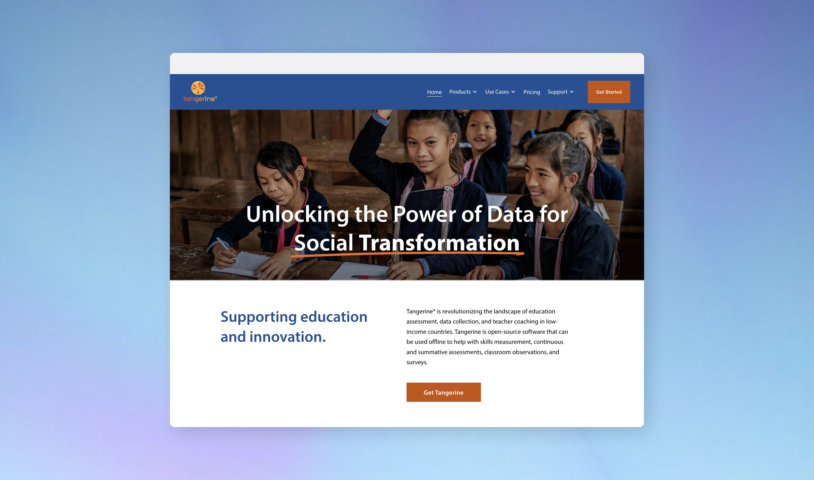
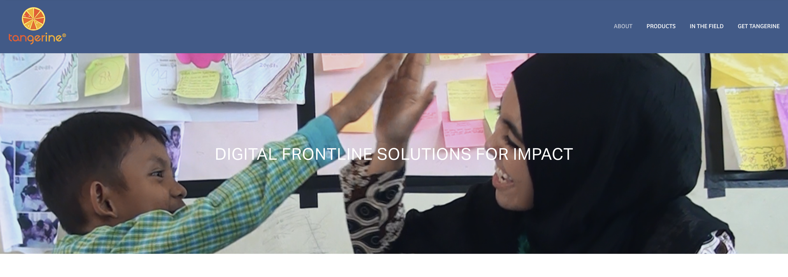
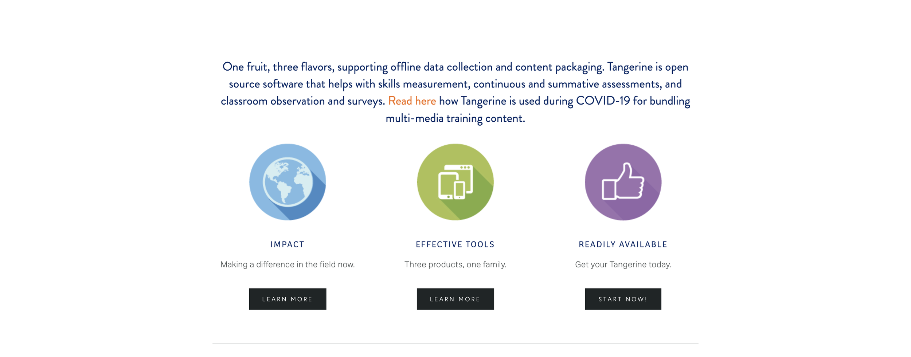
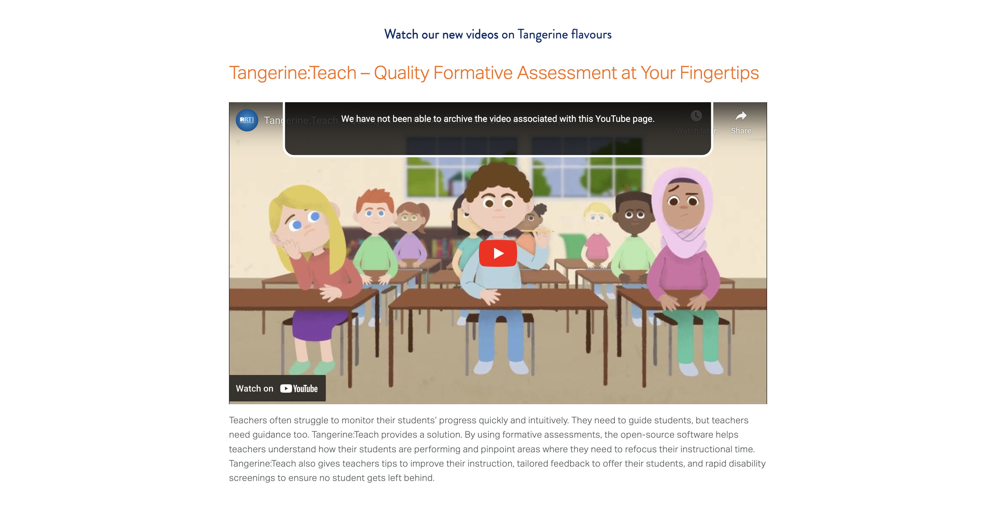
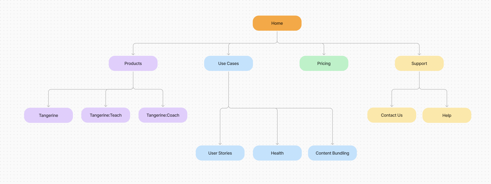
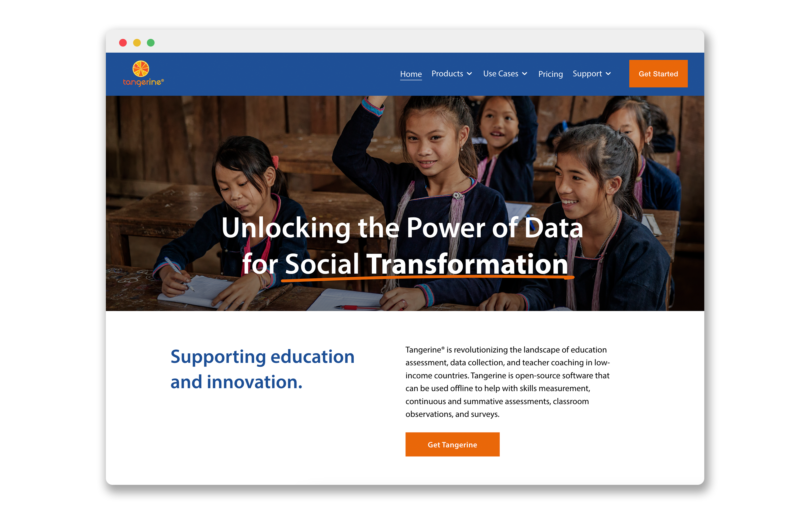
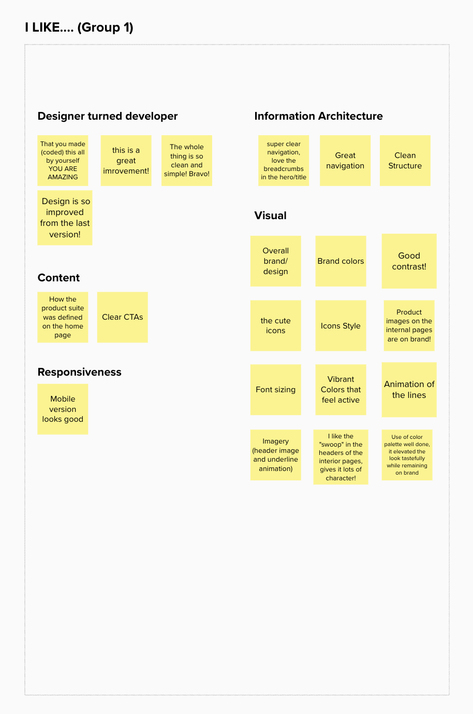
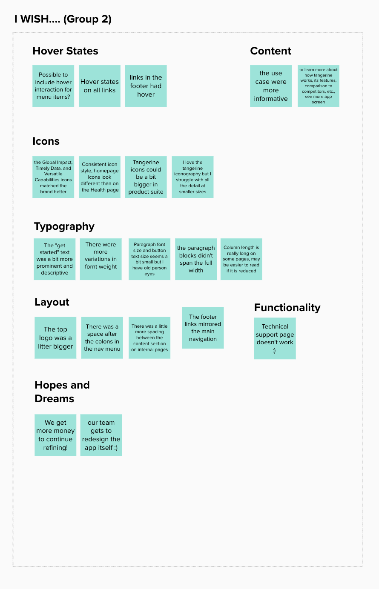
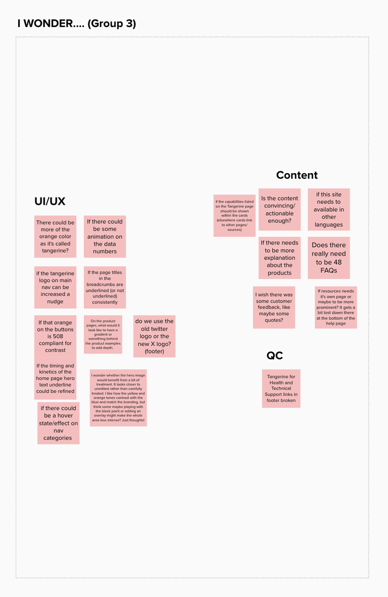
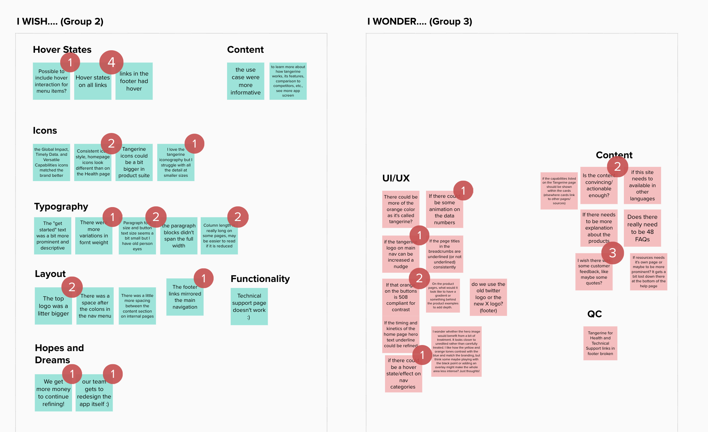

Tangerine Site Redesign
Tangerine is an electronic data collection software. Its primary use is to capture students' responses in oral early grade reading and mathematics skills assessments.
RTI International engaged me to conduct a heuristics review and lead the redesign of the Tangerine website — restructuring its information architecture, resolving brand inconsistencies, and paring down superfluous content to better serve its global user base.

Project Overview
Background
Tangerine is used by educators and researchers across more than 60 countries to assess early literacy and numeracy skills in children. Despite its global reach, the website struggled to communicate the software's value clearly and consistently.
Problem Space
- Disorganized sitemap made it difficult for users to find relevant information
- Brand inconsistencies across pages created a fragmented visual experience
- Superfluous language obscured key messaging and overwhelmed users
Key Accomplishments
- Conducted a heuristics review using Nielsen's 10 usability heuristics
- Restructured the information architecture and rebuilt the sitemap
- Refreshed the brand for visual consistency across all pages
- Reduced and clarified copy to improve scannability and comprehension
Before Redesign



Heuristics Review
-
Needs work
Visibility of System Status
The site provided little feedback on where users were within the navigation hierarchy, leaving users uncertain of their location.
-
Needs work
Match Between System and the Real World
Technical terminology and jargon were used without explanation, creating barriers for non-expert users and international audiences.
-
Pass
User Control and Freedom
Navigation remained accessible throughout the site, allowing users to move freely between sections without dead ends.
-
Needs work
Consistency and Standards
Visual inconsistencies — varying type styles, colors, and component treatments — created a fragmented experience across pages.
-
Needs work
Aesthetic and Minimalist Design
Pages contained dense blocks of text and redundant content, making it difficult for users to identify key information quickly.
-
Needs work
Help and Documentation
Support resources were buried within the site structure and not prominently surfaced for users who needed guidance.
Sitemap

Final Design

Affinity Clustering & Design Updates
After initial design work, I presented the website to my team for feedback. We conducted an affinity clustering session in order to understand what could be improved. This included 3 sections where fellow designers and project managers could leave comments or suggestions. After organizing the clusters, teammates also voted on top priorities for updating the site.




Design Updates
I updated the site with various changes to improve accessibility and brand recognition
- Adding hover states on the navigation links
- Increased header logo size for readability
- Increased the font size across the website
- Added a section for customer feedback to make the product seem more legitimate